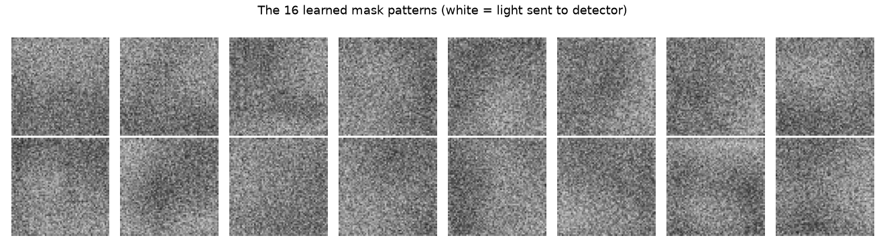
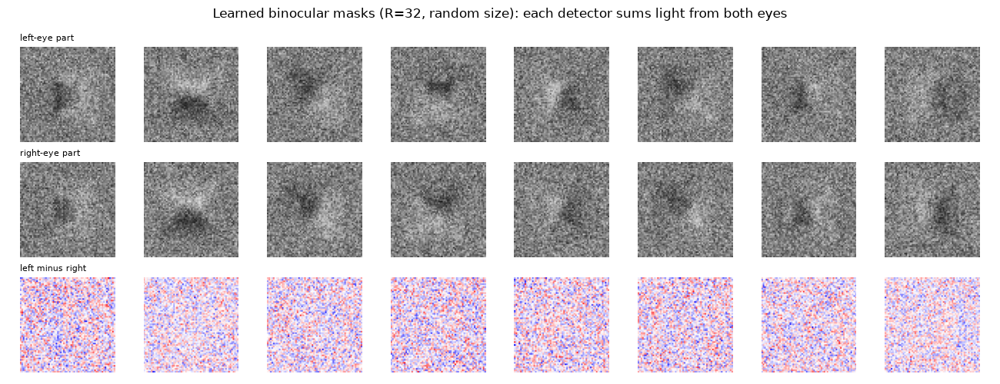
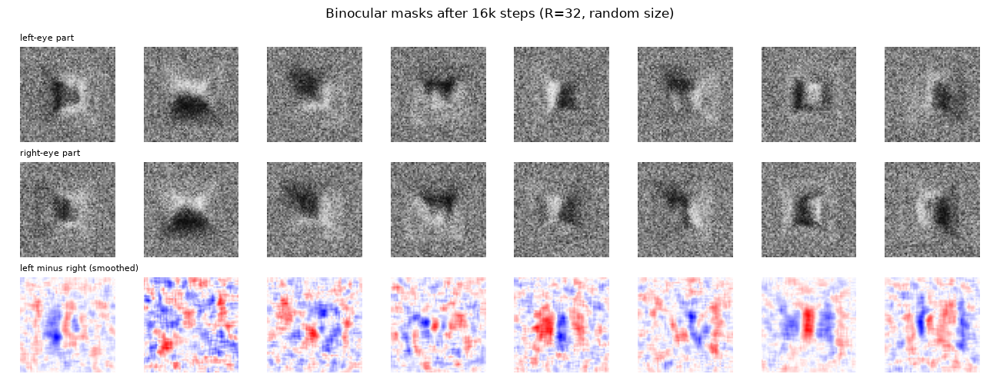

Can a robot see less and still predict motion?
Two small simulated experiments testing an idea from a conversation: instead of capturing a full image and processing it, let the optics pick a few measurements that matter for predicting where things will move. Then: does a second "eye" help in 3D?
Last updated · all results are from simulation
The short version
Bottom line: the intuition holds up. Measuring with the task in mind lets a sensor get away with far less data. But it trades accuracy and robustness for efficiency, some of that fragility can be fixed in the optics themselves, and for depth, a second viewpoint matters exactly when the world is ambiguous.
The idea
A normal vision system captures every pixel, then a neural network works out what matters. The idea tested here moves part of that work into the optics, before anything is digitized:
Each "mask" is a pattern that lets some light through and blocks the rest; a single light sensor behind it reports one number, the total light that got through. This exists in real hardware (a micromirror array plus a single-pixel detector). The patterns are learned together with the predictor, so the optics end up measuring what's useful for predicting motion.
Experiment 1: how few measurements are enough?
A simulated ball bounces under gravity, seen by a 64×64 sensor. Each model sees 100 ms of history and predicts where the ball will be 10, 50 and 100 ms later.
With 16 readings instead of 4096, the error goes from to px: about 3% of the image width. Random masks with the same number of readings get px, so learning what to measure is what makes it work.

The catch: fragility
It breaks when the lights flicker
Trained on steady lighting, the mask sensor's error jumps to px under flicker and px on a busy background. A sum of light can't tell "the ball moved" from "the lights dimmed".
The fix can be in the optics
One extra sensor that measures total light, used to divide the others, cancels flicker: → px, with no cost on clean scenes. Adding varied training then also handles the busy background ( px with 64 masks).
That fix is similar to how your eyes handle a dark-to-bright room: the retina responds to relative brightness (contrast), not absolute brightness. It's a better analogy than two eyes.
The fair comparison is still a trade-off. Given the same varied training, the full image reaches – px on clean, flicker and busy scenes, the best mask sensor – px: roughly 3× the error with 63× fewer readings.
Experiment 2: does a second eye help in 3D?
The ball now bounces in a 3D box 1–3 m away, seen by one or two simulated cameras. The key twist: ball size. If you know how big the ball is, one eye can judge distance from how big it looks. If sizes vary, a big far ball and a small near ball look identical, and only a second viewpoint can tell them apart.
Exactly as predicted: with a known size, one eye is nearly as good as two ( vs cm). With random sizes, one eye's error jumps to cm and two eyes bring it back to cm. The classical size-based method collapses completely ( cm).
Even eyes 3 cm apart more than halve the error ( cm). Classical triangulation gets worse with distance ( cm near → cm far), because far-away objects shift less between the eyes; the learned two-eye model stays much flatter ( → cm).
Few-measurement sensing with two eyes
Splitting 32 readings across two eyes cuts depth error from to cm ( cm with 4× longer training). Masks that combine both eyes' light on one detector at first learned nothing from the second eye ( cm): they learned the same pattern for both eyes, which cancels the depth signal.


Does a model learn 3D on its own?
Partly. Models trained only to predict their own future images, never told about depth, still encode it ( with one eye, with two, vs – for an untrained network). But the second eye barely helped here; predicting blurry low-resolution images didn't push the model to use it.
What it means
Where few-measurement sensing could matter
When data, power or cost is the bottleneck, not accuracy: tiny drones and battery-powered sensors, infrared or other wavelengths where pixel arrays are expensive, and very fast events, since single light sensors respond far faster than cameras read out frames.
Moving computation into optics moves fragility there too
Software can be retrained; fixed optics can't. Robustness has to be designed in, and the experiments show it can be partly done physically (the total-light sensor), not only by more training.
Use AI where physics is hard to write down
For a ball under gravity, a classical tracker is cheap, robust and hard to beat. Learned sensing earns its place with messy dynamics (cloth, fluids, crowds, contact), which is also where a few numbers are least likely to be enough. That tension is the real research question.
Two eyes: when the world is ambiguous
A second viewpoint matters most when single-view cues (like known size) fail, and it helps more with wider separation. Optically combining eyes is possible but harder to learn than keeping them separate.
Related real-world work: event cameras ("silicon retinas"), single-pixel imaging, learned and diffractive optics, and neuromorphic sensors. These results reproduce the trade-offs those fields deal with; they aren't a new result, but they make the trade-offs concrete.
Caveats
- Everything is simulated: one simple object, tiny 64×64 sensors, idealised optics.
- Speed is estimated from computing operations, not timed on hardware. A real micromirror array shows masks one after another, which limits how fast it can take many readings.
- The event-camera model groups events per frame, which hides its main advantage (microsecond timing).
- Most rows come from one or two training runs; the few-measurement models were still improving when training stopped, so their gaps to the full-image models are probably overstated.
- The "does depth emerge" test is one training objective and one run: a first look, not a conclusion.
Possible next steps
- Train the mask sensors longer and with more runs, to see how close they can really get.
- A messier world: several objects, deformable shapes, collisions between objects.
- A stronger "learn on your own" objective, to test whether two eyes lead to 3D understanding without labels.
- A cheap real-hardware test: learned masks printed on transparency film in front of a few photodiodes, read by an Arduino.